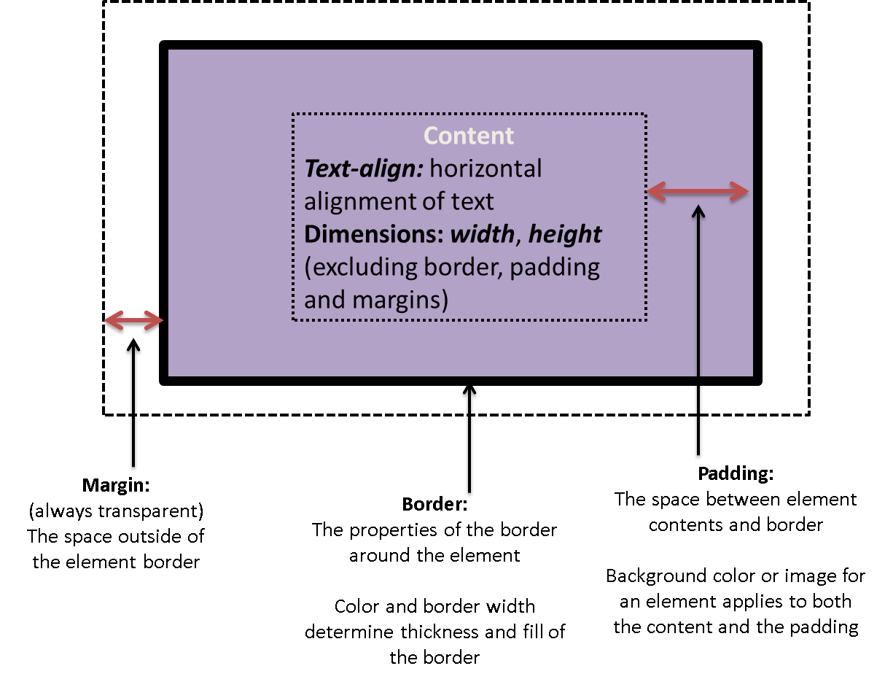

Cascading Style Sheets (CSS)
CSS Box Model
All HTML elements can be considered as boxes. In CSS, the term "box model" is used when talking about design and layout. The CSS box model is essentially a box that wraps around every HTML element. It consists of: margins, borders, padding, and the actual content.

- Content
- The area where your content is displayed, which can be sized using properties like width and height.
- Padding
- The padding sits around the content as white space; its size can be controlled using padding and related properties.
- Border
- The border box wraps the content and any padding. Its size and style can be controlled using border and related properties.
- Margin
- The margin is the outermost layer, wrapping the content, padding and border as whitespace between this box and other elements. Its size can be controlled using margin and related properties.
The full size (width/height) of an element = the (width/height> of the content + padding + border + margin
Please be reminded that the margin, padding, and border need to consider the spaces at the top & bottom; and left & right of the content.
<style> main { width: 200px; /* content */ padding: 15px; /* padding */ border: 3px solid black; /* border */ margin: 0px; /* margin */ } </style> <body> <img src='./images/sheridan.jpeg' width='236px; height: 200px;'> <main>-----------This is Main-----------</main> </body>The full width of main = 200px + 2*15px + 2*3px + 2*0px = 236px.
Margin Collapse
Margin collapse occurs when top and bottom margins of adjacent block-level elements collide to share a general margin space.
The size of this shared space is dictated by the element with the larger margin.
Margin collapse does not apply to left and rightg margins, floating and absolutely positioned elements.
Explore more— w3schools.com
Shorthand properties
Use the sequence TRBL (TRouBLe, clockwise) to specify values for the block sides; applies to properties margin and padding.
- margin: T R B L;
- margin: 4px 10px 5px 2px;
- margin-top: 4px; margin-right 10px; margin-bottom: 5px; margin-left: 2px;
- margin: T L/R B;
- margin: 5px 10px 2px;
- margin-top: 5px; margin-right 10px; margin-bottom: 2px; margin-left: 10px;
- margin: T/B L/R;
- margin: 3px 5px;
- margin-top: 3px; margin-right 5px; margin-bottom: 3px; margin-left: 5px;
- margin: T/R/B/L;
- margin: 8px;
- margin-top: 8px; margin-right 8px; margin-bottom: 8px; margin-left: 8px;
There are other shorthand properties, such as border, outline, font, background, etc.
Inline vs. block behaviour
The display property specifies the display behavior (the type of rendering box) of an element. In HTML, the default display property value is taken from the HTML specifications or from the browser and user default style sheet.
- inline
- Displays an element as an inline element (like <span>). Any height and width properties will have no effect
- block
- Displays an element as a block element (like <p>). It starts on a new line, and takes up the whole width